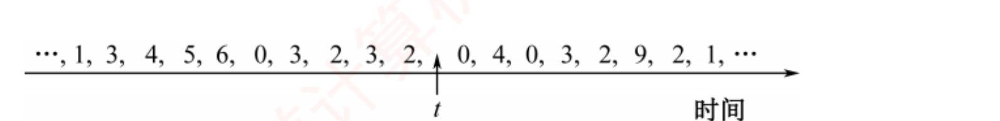
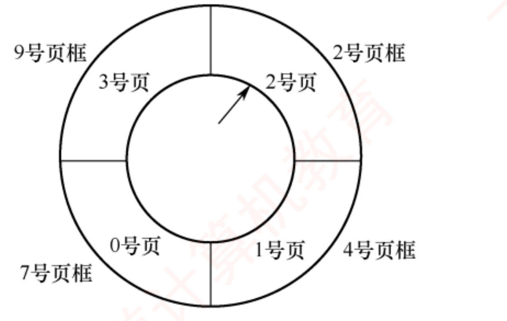

408
408先答旧题
虚拟地址到数据的全路径是什么？
哪两种命中组合不可能？
缺页处理完回到哪？
上一话那条路上有一个分叉：缺页。这一话讲缺页之后操作系统做什么：页从哪来、赶走谁、给每个进程几个页框，以及整台机器什么时候会被拖垮。
其之壹虚拟内存是什么
前面的办法都要求进程整个进内存。程序比内存大就跑不了；几个进程一起，内存很快占满，而它们其实大部分内容暂时用不上。
你的书桌
书架（磁盘）很大，书桌（内存）很小。桌上只放现在要看的书，要别的书再去书架拿，桌子满了就把一本放回去。对你来说就像桌子无限大。这件事能成，靠的是局部性：一段时间里你只翻那几本。这个比方的局限是：搬书的代价在真实系统里比读书慢上十万倍。
虚拟内存的三个特征
多次性：一个进程分多次调入。对换性：运行中可以换入换出。虚拟性：逻辑上扩大内存。
必须基于非连续分配（请求分页、请求分段、请求段页）。连续分配做不到只装一部分。
实际可用容量 = min(主存 + 外存, 地址空间大小)。
其之貳请求分页
在基本分页上加两个能力：请求调页（用到时才调入）和页面置换（满了把一页赶出去）。这要求页表项多几个字段：
- 存在位 P：页在不在内存。
- 访问位 A：最近用过没有，给置换算法看。硬件在访问时置 1。
- 修改位 M：调入后改过没有。M=1 换出时才要写回磁盘，M=0 直接丢弃。
- 外存地址：页不在内存时，到磁盘哪里找。
缺页时发生什么
缺页处理
① 硬件：地址转换时发现 P=0，产生缺页异常，CPU 转入内核。
② OS：有空闲页框就直接用；否则用置换算法选一页，若 M=1 先写回磁盘。
③ OS：启动磁盘 I/O 读入页面，进程阻塞，CPU 转去跑别的进程。
④ OS：I/O 完成，中断唤醒进程，修改页表（P=1，填页框号）。
⑤ 重新执行这条指令。
缺页和一般中断的区别：它是指令执行中间产生的异常（故障），处理完回到本条指令；一条指令执行时可能缺页多次（指令本身跨页，操作数也跨页）。而外部中断要等指令做完才响应，回到下一条。
调入策略：预调页：把可能要用的页一起调入（利用空间局部性），多用于进程刚开始。请求调页：缺页时才调。两者结合。
从哪调入：对换区比文件区快（连续分配）。对换区足够时全部走对换区；不够时，不会修改的页（代码）直接从文件区读，会修改的页走对换区。
合上页面说一遍：缺页处理按顺序说一遍。修改位起什么作用？
硬件产生异常 → 选页框（必要时置换，M=1 写回）→ 启动 I/O、进程阻塞 → 改页表 → 重新执行。修改位决定换出时要不要写回。
其之參页面置换算法
页框满了，赶走谁？目标是让以后的缺页尽量少。用同一个序列比较，3 个页框：7 0 1 2 0 3 0 4 2 3 0 3 2 1 2 0 1 7 0 1。
OPT（最佳）：赶走将来最久不用的。需要预知未来，所以实现不了，只作比较的基准。
| 访问 | 7 | 0 | 1 | 2 | 0 | 3 | 0 | 4 | 2 | 3 | 0 | 3 | 2 | 1 | 2 | 0 | 1 | 7 | 0 | 1 |
|---|---|---|---|---|---|---|---|---|---|---|---|---|---|---|---|---|---|---|---|---|
| 页框0 | 7 | 7 | 7 | 2 | 2 | 2 | 2 | 2 | 2 | 2 | 2 | 2 | 2 | 2 | 2 | 2 | 2 | 7 | 7 | 7 |
| 页框1 | 0 | 0 | 0 | 0 | 0 | 0 | 4 | 4 | 4 | 0 | 0 | 0 | 0 | 0 | 0 | 0 | 0 | 0 | 0 | |
| 页框2 | 1 | 1 | 1 | 3 | 3 | 3 | 3 | 3 | 3 | 3 | 3 | 1 | 1 | 1 | 1 | 1 | 1 | 1 | ||
| 缺页 | ● | ● | ● | ● | ● | ● | ● | ● | ● |
OPT：3 个页框，缺页 9 次，缺页率 9/20。
FIFO：赶走最早进来的。实现简单（一个队列），但不看使用情况，最早进来的可能正是最常用的。
| 访问 | 7 | 0 | 1 | 2 | 0 | 3 | 0 | 4 | 2 | 3 | 0 | 3 | 2 | 1 | 2 | 0 | 1 | 7 | 0 | 1 |
|---|---|---|---|---|---|---|---|---|---|---|---|---|---|---|---|---|---|---|---|---|
| 页框0 | 7 | 7 | 7 | 0 | 0 | 1 | 2 | 3 | 0 | 4 | 2 | 2 | 2 | 3 | 0 | 0 | 0 | 1 | 2 | 7 |
| 页框1 | 0 | 0 | 1 | 1 | 2 | 3 | 0 | 4 | 2 | 3 | 3 | 3 | 0 | 1 | 1 | 1 | 2 | 7 | 0 | |
| 页框2 | 1 | 2 | 2 | 3 | 0 | 4 | 2 | 3 | 0 | 0 | 0 | 1 | 2 | 2 | 2 | 7 | 0 | 1 | ||
| 缺页 | ● | ● | ● | ● | ● | ● | ● | ● | ● | ● | ● | ● | ● | ● | ● |
FIFO：3 个页框，缺页 15 次，缺页率 15/20。
LRU：赶走最久没用的，用过去预测未来。效果接近 OPT，但每次访问都要更新记录，要靠硬件（计数器或栈）。
| 访问 | 7 | 0 | 1 | 2 | 0 | 3 | 0 | 4 | 2 | 3 | 0 | 3 | 2 | 1 | 2 | 0 | 1 | 7 | 0 | 1 |
|---|---|---|---|---|---|---|---|---|---|---|---|---|---|---|---|---|---|---|---|---|
| 页框0 | 7 | 7 | 7 | 2 | 2 | 2 | 2 | 4 | 4 | 4 | 0 | 0 | 0 | 1 | 1 | 1 | 1 | 1 | 1 | 1 |
| 页框1 | 0 | 0 | 0 | 0 | 0 | 0 | 0 | 0 | 3 | 3 | 3 | 3 | 3 | 3 | 0 | 0 | 0 | 0 | 0 | |
| 页框2 | 1 | 1 | 1 | 3 | 3 | 3 | 2 | 2 | 2 | 2 | 2 | 2 | 2 | 2 | 2 | 7 | 7 | 7 | ||
| 缺页 | ● | ● | ● | ● | ● | ● | ● | ● | ● | ● | ● | ● |
LRU：3 个页框，缺页 12 次，缺页率 12/20。
LRU 手算的快捷法：要淘汰时，从当前位置往回数不同的页号，数到第 n 个（n = 页框数），那一个就是要赶走的。
Belady 异常：FIFO 下，增加页框，缺页反而可能变多。序列 1 2 3 4 1 2 5 1 2 3 4 5：3 个页框缺页 9 次，4 个页框缺页 10 次。只有 FIFO 有。LRU 和 OPT 属于「栈算法」，页框多时内存里的页总包含页框少时的页，所以不会。
CLOCK（NRU）：LRU 太贵，用一个访问位近似。页面围成一圈，指针转：
- 看指针指向的页：A=1 就清 0，给它「第二次机会」，指针后移。
- A=0 就赶走它，新页放这里（A=1），指针后移。
最多转两圈一定能找到。
| 访问 | 1 | 2 | 3 | 4 | 1 | 2 | 5 | 1 | 2 | 3 | 4 | 5 |
|---|---|---|---|---|---|---|---|---|---|---|---|---|
| 页框0 | 1 | 1 | 1 | 4 | 4 | 4 | 5 | 5 | 5 | 5 | 5 | 5 |
| 页框1 | 2 | 2 | 2 | 1 | 1 | 1 | 1 | 1 | 3 | 3 | 3 | |
| 页框2 | 3 | 3 | 3 | 2 | 2 | 2 | 2 | 2 | 4 | 4 | ||
| 缺页 | ● | ● | ● | ● | ● | ● | ● | ● | ● |
CLOCK：3 个页框，缺页 9 次，缺页率 9/12。
改进型 CLOCK：还要考虑修改位，因为写回磁盘贵，优先赶没改过的。按 (A,M) 优先级：
改进型 CLOCK 的顺序
第一轮：找 (0,0)，不改任何位。
第二轮：找 (0,1)，把扫过的 A 清 0。
没找到就重复第一轮、第二轮。最多四轮。
淘汰优先级：(0,0) → (0,1) → (1,0) → (1,1)。
为什么 (0,1) 排在 (1,0) 前面？因为第一关先看「最近用没用」，局部性优先；在都没用的里面，再挑不用写盘的。
置换算法对比
OPT：最优，不可实现。FIFO：差，有 Belady。LRU：好，开销大。CLOCK：接近 LRU，开销小。
合上页面说一遍：不看书，用一句话说出每种算法赶走谁；Belady 异常发生在哪个算法？
OPT 赶将来最久不用的；FIFO 赶最早进来的；LRU 赶最久没用的；CLOCK 赶访问位为 0 的。Belady 只有 FIFO。
其之肆给每个进程几个页框
驻留集：操作系统分给进程的页框集合。太少，缺页频繁；太多，并发进程就少了，而且多到一定程度缺页率也不再降。
分配分两个维度：固定（运行期间页框数不变）和可变；置换也分两种：局部（只赶自己的页）和全局（可以赶别人的页）。
三种组合（只有这三种）
固定分配局部置换：页框数不变，缺页赶自己的。开始时难定数目。
可变分配全局置换：缺页就从空闲页框给一个，没有了就赶别的进程的。别人缺页会增加。
可变分配局部置换：缺页赶自己的；缺页太频繁时再多给几个。
没有「固定分配全局置换」：全局置换拿别人的页框就是在增加自己的页框数，和固定矛盾。
分配多少：平均分配、按进程大小比例、按优先级。
写时复制
fork 创建子进程时，如果把父进程所有页都复制一遍，很浪费，何况子进程常常马上 exec 换成别的程序。于是写时复制：父子共享同一批物理页，都标记为只读。任何一方要写，触发异常，这时才复制出那一页。没写的页永远不用复制。
其之伍抖动和工作集
刚放回书架的书马上又要
桌子太小，要用的书放不下，刚放回去的又要拿，大部分时间花在搬书上。这就是抖动。
抖动：页面刚换出又要换入，CPU 利用率骤降。根本原因是分配给进程的页框数少于它实际需要的。更糟的是，CPU 利用率低时，系统可能反而再加入新进程，于是更抖。
工作集：最近 Δ 次访问涉及的页面集合（重复的只算一个）。它的大小就是进程此时真正需要的页框数。驻留集小于工作集就会抖。
解决：撤销或挂起部分进程（降低多道程序度），或者增加内存。提高优先级、增大交换区都没有用。
合上页面说一遍：抖动的根本原因是什么？哪些措施有用？
页框数少于工作集。减少并发进程或加内存。扩交换区和改优先级不解决问题。
其之陸内存映射文件与页框回收
内存映射文件（mmap）：把一个文件映射到进程的虚拟地址空间。之后进程读写这段内存就等于读写文件：第一次访问时缺页，操作系统从文件里调入这一页；修改过的页，以后由操作系统写回文件。
好处是两个：① 不用 read、write 系统调用，简化文件操作；② 多个进程映射同一个文件，它们的页表指向同一批物理页，实现内存共享。
页框回收：等到一个页框也不剩了才置换就太晚了。操作系统维护一批空闲页框，空闲量低于某个阈值时，由后台回收进程（Linux 里叫 kswapd）提前扫描回收。回收时干净的页（M=0）直接可用，脏页要先写回。
回收的优先顺序
干净页比脏页便宜（不用写盘）。文件映射页可以写回文件；匿名页（堆、栈）要写到交换区。
其之柒性能取决于什么
有效访问时间
T = (1−p)·Tm + p·缺页处理时间。
代入：Tm = 100 ns，缺页处理 8 ms，缺页率 p = 1/1000。T = 0.999×100 + 0.001×8000000 ≈ 8100 ns，比不缺页慢了 81 倍。想把损失控制在 10% 内，p 必须小于 10 ÷ 8000000，约一百万次才能缺一次。
影响因素和改进方向：
- 缺页率：页框数越多越低（到一定程度后趋平）；页越大一次带进来越多，但太大浪费；置换算法；程序的局部性，比如二维数组按行访问。
- 地址转换速度：增大 TLB、让页表常驻内存。扩大交换区对这个没有帮助。
- 写回频率：换出时脏页要写盘，所以可以攒一批脏页，批量写回。
领域展开
缺页：P=0 → 异常 → 选页（M=1 写回）→ I/O、阻塞 → 改页表 → 重新执行。
算法：FIFO 有 Belady；LRU 好但贵；CLOCK 廉价；改进 CLOCK 先 (0,0) 再 (0,1)。
分配：没有「固定 + 全局」。
抖动：页框少于工作集；减进程、加内存。
其之捌实战
再深一层
第一组（A/B）：虚存的实现基础 虚存要「按页换进换出」⟹ 必须能把程序拆开、分散存放 连续分配整块装入，拆不开 ⟹ 无法实现虚存 ⟹ 只能基于非连续（离散）分配 ⟹ B ✓ 第二组（C/D）：虚存的容量限制 两句话都不完整，且都用了「只受」这个绝对词 ⟹ 都错⚠️⚠️ C、D 的正确版本必须逐字记住，这是全章四条分界线的第 ③ 条：
最大容量：由计算机的地址位数决定（与内外存无关） 实际容量：受内存 + 外存之和的限制 ⟹ C「只受外存限制」错在漏了内存且漏了地址位数 ⟹ D「只受内存限制」错得更离谱⭐ 这条分界线在本节被考了三次，三题的问法各不相同：
选 18 给出主存 1MB、外存 400MB、地址 32 位，问最大容量
⟹ 答 2³²B（那两个容量是纯诱饵）
2012（本题）用「只受…限制」的绝对句式让你判错
2023（选 58）说「虚地址空间大小由内存和硬盘决定」
⟹ 判错，理由同上三题合起来就是同一句话的正、反、变形三种考法。📌 三种虚存实现方式，名字里都有「请求」（见本节选 35）：请求分页 · 请求分段 · 请求段页式——全部是离散分配，这就是 B 说「只能基于非连续分配」的实证。
Ⅰ. 修改页表 Ⅱ. 磁盘 I/O Ⅲ. 分配页框
再深一层
缺页处理流程与三个选项的对应： ① 硬件发现存在位 = 0 ⟹ 产生异常（这一步是硬件，不是 OS） ② OS 找空闲页框；没有就按算法淘汰一页 ⟸ Ⅲ 分配页框 ③ 淘汰页 M=1 则写回磁盘 + 读入新页 ⟸ Ⅱ 磁盘 I/O ④ 填页框号、存在位置 1、更新 TLB ⟸ Ⅰ 修改页表 ⑤ 唤醒进程，重新执行那条指令⚠️ 把本题与 2013（选 46）、2022（选 56）三道真题并排看，能看清命题人的问法层次：
2011（本题） 问「可能执行」 ⟹ 全选 D
2013（选 46） 问「可能执行」，但选项混入「处理越界错」
⟹ 越界检查在查页表之前就做完了 ⟹ 排除
2022（选 56） 问「不一定包含」 ⟹ 找那个可选步骤
⟹ 淘汰页面（有空闲页框时就不淘汰）⟹ 同一个流程被从三个角度问了三次。把流程默写一遍，三道题一起拿下。📌 「修改页表」具体改哪几处，值得说细一点：① 存在位 0 → 1；② 填入新的页框号；③ 访问位置 1；④ 若淘汰了别的页，还要把那一页的存在位改回 0。2024 真题（本节综 22）第 1 问考的正是「更新页表项」的地址与内容。
Ⅰ. 处理越界错 Ⅱ. 置换页 Ⅲ. 分配内存
再深一层
地址变换的三道关卡，顺序不可颠倒： ① 越界检查：页号 ≥ 页表长度？ ⟹ 是则越界异常，到此为止 ② 查页表：读出该页表项 ③ 存在位检查：存在位 = 0？ ⟹ 是则缺页异常 题干说「产生缺页」⟹ 说明已经走到了第 ③ 关 ⟹ 第 ① 关早就通过了 ⟹ 地址是合法的 ⟹ 不可能再去处理越界错 ⟹ Ⅰ 排除⟹ 本题的推理不是「越界和缺页无关」，而是「能缺页，就说明没越界」。这是一个基于时序的排除，比死记结论牢固得多。
📌 两种异常的完整对照：
越界异常 缺页异常 触发条件 页号 ≥ 页表长度 存在位 = 0 发生时机 查页表之前 查页表之后 性质 程序有错（非法访问） 程序没错（正常的按需调页） 处理结果 通常终止进程 调入页面后继续运行「一个是程序犯错，一个是机制正常运转」——这是两者最本质的区别。
⭐ Ⅱ 用「置换页」而不是「淘汰页」，Ⅲ 用「分配内存」而不是「分配页框」，都是同一件事的不同措辞。真题的选项措辞常和教材不完全一致，读题时要能把它翻译回教材术语。
Ⅰ. LRU 算法 Ⅱ. FIFO 算法 Ⅲ. OPT 算法
再深一层
堆栈类算法（stack algorithm）的性质： m 个页框的驻留集 ⊆ (m+1) 个页框的驻留集（任意时刻） ⟹ m 个框能命中的，m+1 个框必定也命中 ⟹ 页框增加，缺页数单调不增 ⟹ 不可能有 Belady LRU ✓ 是堆栈类（淘汰依据「最久未用」与页框数无关） OPT ✓ 是堆栈类（淘汰依据「未来最晚用」与页框数无关） FIFO ✗ 不是（淘汰依据「进入次序」，页框变多会改变淘汰时机）📌 一句话记法：凡是「按页面自身性质排序」的算法都无 Belady；FIFO 排的是「进入时间」，那是个与页面价值无关的量。
⚠️⚠️ 本题与本节选 17 必须分开记，这是全章四条分界线的第 ② 条：
问「哪个算法可能有 Belady」 ⟹ FIFO（本题、选 33） 问「FIFO 下页框增加缺页如何」⟹ 可能增也可能减（选 17） 「可能出现」≠「一定出现」—— FIFO 大多数时候页框增加缺页也是减少的， Belady 只是偶发的反常，但「偶发」也足以让答案是「可能」⭐ 两个必须能默写的反例串：
1,2,3,4,1,2,5,1,2,3,4,5 FIFO：m=3 → 9，m=4 → 10（选 39 用它） 4,3,2,1,4,3,5,4,3,2,1,5 FIFO：m=3 → 9，m=4 → 10（综 04 用它）两串结构相似：都是「先铺 4 个不同页，再插入一个新页，然后回头访问旧页」。这正是 Belady 的构造套路。
再深一层
技巧：从后往前数，数到第 m 个不同页号就是淘汰对象
序列 2,0,2,9,3,4,2,8,2,4,8,4,5 （m = 4 个页框）
从后往前：5(第1个新) → 4(第2个) → 8(已数) → 4(已数)
→ 2(第3个)? 等一下，继续：
倒序读：5, 4, 8, 4, 2, 8, 2, 4, 3, 9, 2, 0, 2
去重取前 4 个：5, 4, 8, 2
⟹ 第 4 个（最后一个）= 2 ⟹ 淘汰页 2📌 为什么这个技巧是对的，一句话：从后往前数到的第 m 个不同页号，就是驻留集中「最近一次访问时刻最早」的那个——正是 LRU 的定义。比画表快 5 倍，而且不会数错。⭐ 用画表法交叉验证（确认驻留集）：
走完 13 次访问后，驻留集 = {5, 4, 8, 2}
各自的最近访问位置（第几次）：
5 → 第 13 次 4 → 第 12 次
8 → 第 11 次 2 → 第 9 次 ← 最早 ⟹ 淘汰
（页 0、9、3 早已被淘汰，不在驻留集里）⚠️ 干扰项 B（3）的来源：把「最早进入的」当成 LRU 的依据——那是 FIFO。序列里 3 出现在第 5 位，确实比 2 的首次出现晚，但 3 早就被淘汰出驻留集了，连候选资格都没有。⟹ 做 LRU 题第一步永远是「先确定谁还在驻留集里」，只有 m 个候选。再深一层
4 个页框，序列 0,1,2,7,0,5,3,5,0,2,7,6（12 次访问） 访问 结果 驻留集 计数 0 缺页·装入 [0] 缺1 1 缺页·装入 [0,1] 缺2 2 缺页·装入 [0,1,2] 缺3 7 缺页·装入 [0,1,2,7] 满 缺4 0 命中 [0,1,2,7] 5 缺页·淘汰 1 [0,5,2,7] 缺5 换1 3 缺页·淘汰 2 [0,5,3,7] 缺6 换2 5 命中 [0,5,3,7] 0 命中 [0,5,3,7] 2 缺页·淘汰 7 [0,5,3,2] 缺7 换3 7 缺页·淘汰 3 [0,5,7,2] 缺8 换4 6 缺页·淘汰 5 [0,6,7,2] 缺9 换5 总缺页 9 次 · 其中前 4 次是「装入」 · 真正置换 5 次⚠️⚠️ 两个术语的分界线，逐字记住：
缺页（page fault）：要访问的页不在内存 ⟹ 本题 9 次
置换（page replacement）：为装入新页而淘汰一个旧页 ⟹ 5 次
关系：置换次数 = 缺页次数 − min(页框数, 不同页号数)
本题 = 9 − 4 = 5 ✓
前 m 次缺页只是「往空框里装」，没有任何页被赶走⟹ 干扰项 D（6）几乎肯定来自「9 − 3」或数错一步；而若把题看成问缺页次数，会得到 9——连选项都没有，这说明命题人根本没打算给「读错题的人」一条活路。⭐ 2025 真题（本节选 59）用第三个措辞问同一件事：「系统执行缺页异常处理程序的次数」——这次问的是缺页（不是置换），答 6。而且那题「0,1,2 三个页已在内存中」，把装入阶段直接跳过了。
三种问法一定要分清： 「缺页次数 / 缺页异常处理次数」⟹ 数所有不在内存的访问 「页置换次数 / 淘汰次数」 ⟹ 减去装入阶段 「缺页率」 ⟹ 缺页次数 ÷ 总访问次数
再深一层
把 (A,M) 读成二进制数 AM： (0,0) = 00 = 0 ← 最先淘汰 (0,1) = 01 = 1 (1,0) = 10 = 2 (1,1) = 11 = 3 ← 最后淘汰 ⟹ 从小到大：(0,0) → (0,1) → (1,0) → (1,1) ✓ 选 A📌 为什么 A 的权重高于 M（这是本题唯一需要理解的地方）：
A（最近有没有被访问）关系到「这页还会不会再用」 ⟹ 淘汰错了要再缺一次页（磁盘读，ms 级） M（有没有被修改）只关系到「要不要多写一次盘」 ⟹ 代价是一次磁盘写（也是 ms 级，但只多一次） 淘汰错人（还要用的页）比多写一次盘更亏 ⟹ 先保「不会再用」（A=0），再省 I/O（M=0）⚠️ 注意题干把四类的列举顺序写成 (0,0), (1,0), (0,1), (1,1)——这个顺序不是淘汰顺序，只是「所有可能取值」的罗列。选项 B 正是把题干的罗列顺序原样搬过来的陷阱。⟹ 别被题干的排列带节奏。
⭐ 三步扫描的细节（综合题会考，选择题只需记次序）：
第 1 轮：扫一圈找 (0,0)，不改任何 A 位 第 2 轮：扫一圈找 (0,1)，把经过的每个帧的 A 置 0 第 3 轮：此时所有 A 已全为 0 ⟹ 回到第 1 轮，必定成功 ⟹ 最多扫 4 圈（不超过 2 轮完整循环）2021 真题（本节选 55）就是拿这个次序在两个页框间做一次选择，综 09、综 11 则是在四个页框里选。
再深一层
固定分配：进程的页框数自始至终不变
全局置换：可以抢别的进程的页框
⟹ 抢到手，自己的页框数就 +1
⟹ 被抢的进程页框数 −1
⟹ 两个进程的驻留集都变了 ⟹ 与「固定」直接冲突📌 三种可行组合各自的性格：固定 + 局部 最简单，各管各的。缺点：页框数难以事先定准，
定少了自己抖动，定多了浪费
可变 + 全局 最常用。缺页就从空闲链表拿；没空闲就抢
缺点：一个坏进程可能连累全场
可变 + 局部 最理想。按缺页率动态调整本进程的驻留集
（缺页率高就多给，低就收回）⟹ 工作集模型 / PFF 法⭐ 记忆口诀：「全局必可变」——五个字覆盖本题全部考点。⚠️ 顺带留意：真题题干里的「固定分配局部置换」是一个高频组合词，本节 2019（选 53）、2025（选 59）、选 12、2010 真题（综 16）的题干里都出现了它。它的作用是告诉你「页框数固定、只在本进程内换」——这正是你能安心画置换表的前提。
Ⅰ. 撤销部分进程 Ⅱ. 增加磁盘交换区的容量 Ⅲ. 提高用户进程的优先级
再深一层
Ⅰ 撤销部分进程 ✓ 减少需求——少几个进程抢页框，
剩下的进程驻留集变大 ⟹ 装得下工作集
Ⅱ 增大交换区 ✗ 交换区又没满，它是「太忙」不是「太小」
Ⅲ 提高优先级 ✗ 优先级决定谁先上 CPU，
但抖动时所有人都在等磁盘，抢 CPU 毫无意义📌 Ⅲ 错得很有教学价值：它混淆了两种资源。优先级调的是 CPU 这个资源的分配顺序；抖动缺的是 内存页框 这个资源的总量。给一个正在等磁盘的进程提高 CPU 优先级，就像给排队等餐的人一把更快的叉子。⭐ 本节三道抖动题的答案汇总（背这张表就够）：
有效 无效 2011（本题） 撤销部分进程 扩交换区 · 提优先级 选 40 加内存条 换更快硬盘 · 扩交换区 · 加进程数 选 41 加内存 + 减程序度 扩交换区 · 加程序度 · 快盘 · 快 CPU 有效的只有两种：① 加物理内存 ② 减少并发进程数⚠️ 王道正文给的两个「正规」解法也应知道名字：工作集模型（按工作集大小分配页框，装不下就挂起该进程）与缺页率法 PFF（缺页率高于上限就多给页框，低于下限就收回）。这两个是 OS 自动调节的机制，本质仍是「加供给 / 减需求」。

再深一层
序列 …, 1, 3, 4, 5, 6, 0, 3, 2, 3, 2, ↑t
, 0, 4, 0, 3, 2, 9, 2, 1, …
① 往回数：工作集看的是过去，t 之后的一律不看
② 数 6 个（窗口大小 Δ = 6）：6, 0, 3, 2, 3, 2
③ 去重：{6, 0, 3, 2} ⟹ 4 个不同页面 ✓ 选 A⚠️⚠️ 三个干扰项分别对应三种典型错误，全都可还原：B {2, 3, 0, 4} ← 往后数了（取 t 之后的 0,4,0,3,2）
C {0,4,3,2,9} ← 往后数 6 个（0,4,0,3,2,9）去重
D {4,5,6,0,3,2} ← 往回数了 8 个（把窗口当成「6 个不同页面」）⟹ B、C 都是「方向错」，D 是「把窗口理解成去重后的个数」。窗口 Δ 数的是访问次数，不是不同页面数——这也正是为什么答案只有 4 个元素而窗口是 6：6 次访问里有重复。📌 工作集的定义要逐字记：「在某段时间间隔 Δ 内，进程实际访问页面的集合」——记作 W(t, Δ)，是过去 Δ 次访问所涉及页面的集合。⟹ 工作集大小 ≤ Δ，且随时间滑动而变化。
⭐ 算出工作集有什么用（这才是它被发明的原因）：OS 按 |W(t,Δ)| 给进程分配页框——本题算出 4，就说明该进程此刻至少需要 4 个页框才不抖动。若给不到 4 个，就应该把它挂起（这正是治抖动的「工作集模型」）。
⚠️ 题干那句「抖动和工作集已从最新大纲中删除」是王道加的提醒：不必深挖工作集的复杂性质，但概念区分仍要会（本节选 29、选 39 都在考「工作集 vs 驻留集」，那两道不是真题却是常考点）。
Ⅰ. 增大快表（TLB）容量 Ⅱ. 让页表常驻内存 Ⅲ. 增大交换区（swap）
再深一层
虚实转换要做的事：查 TLB → （未命中）查页表 → 得页框号
Ⅰ 增大 TLB ✓ 命中率↑ ⟹ 更多次转换一步到位，不必查内存页表
Ⅱ 页表常驻内存 ✓ 页表本身若被换出到磁盘，
查页表时还要先为页表缺一次页（ms 级！）
常驻 ⟹ 最坏也只是访内存（ns 级）
Ⅲ 增大交换区 ✗ 交换区只在调页时用到，
与「翻译地址」这个动作完全无关📌 Ⅱ 值得多想一层：页表自己也是内存里的数据，也可能被换出去。多级页表尤其如此——高级页表常驻，低级页表可以换出。一旦要查的那级页表不在内存，就会发生「查页表时的缺页」，代价是一次磁盘 I/O。本节综 14 第 3 问算的正是这种情形：「访问一级页表不缺页，访问二级页表缺页率 10%」⟹ 平均转换时间飙到 约 20014ns（比不缺页时的 14ns 慢了 1400 倍）。⭐ Ⅲ 这类「交换区」诱饵在本节出现了三次，全是错的：2011 真题（选 44）的 Ⅱ「增加交换区容量」治抖动 ✗ · 选 41 的 Ⅱ「增大交换区」✗ 与 Ⅴ「更快的交换区」✗ · 本题的 Ⅲ ✗。⟹ 记一句话：交换区的大小和速度，几乎不是任何问题的答案。
| 页号 | 页框号 | 有效位（存在位） |
|---|---|---|
| 0 | 101H | 1 |
| 1 | — | 0 |
| 2 | 254H | 1 |
1）依次访问上述三个虚地址，各需多少时间？给出计算过程。
2）基于上述访问序列，虚地址 1565H 的物理地址是多少？请说明理由。
1）
| 虚地址 | 页号 P | 过程 | 用时 |
|---|---|---|---|
| 2362H | 2 | TLB 初始为空 ⟹ 访问快表 10ns 落空 → 访问页表 100ns 得页框号 → 合成物理地址后访问主存 100ns | 210ns |
| 1565H | 1 | 访问快表 10ns 落空 → 访问页表 100ns 落空（有效位 0）→ 缺页中断处理 10⁸ns → 访问快表 10ns → 访问主存 100ns | 100000220ns |
| 25A5H | 2 | 第一次访问已将该页号放入快表 ⟹ 花费 10ns 便可合成物理地址 → 访问主存 100ns | 110ns |
再深一层
💭 思路（动手前看）
- 先把「4KB 页 + 十六进制」这个便利吃透，它让本题的拆位变成一眼看穿。
页 4KB = 2¹² ⟹ 页内偏移 12 位 = 3 个十六进制位 ⟹ 十六进制地址「去掉末三位」就是页号 2362H ⟹ 页 2，偏移 362H 1565H ⟹ 页 1，偏移 565H 25A5H ⟹ 页 2，偏移 5A5H⟹ 三个地址其实只涉及两个页：页 2（两次）和页 1（一次）。第一个和第三个是同一页——这是第 3 次访问能只花 110ns 的原因。 - 三次访问对应三种不同的路径，题目设计得极其工整。
第 1 次 TLB 未命中 + 页在内存 ⟹ 10 + 100 + 100 = 210 第 2 次 TLB 未命中 + 缺页 ⟹ 10 + 100 + 10⁸ + 10 + 100 第 3 次 TLB 命中 ⟹ 10 + 100 = 110
⟹ 一道题把 TLB 的三种情形全演了一遍，这就是它成为经典真题的原因。 - 第 2 次访问的「+10 +100」最容易漏，理由必须说清。题干假设 ③ 白纸黑字写着「缺页中断处理后，返回到产生缺页中断的指令处重新执行」⟹ 重新执行意味着整个地址变换要再走一遍：先查 TLB（这次会命中，因为缺页处理已更新 TLB）10ns，再访存 100ns。⟹ 若漏掉这 110ns，答案会是 100000110ns，与标准答案差 110。
- 第 2 问考的是「页 1 装进了哪个页框」，靠 LRU 判断。
驻留集固定为 2，缺页前内存中有 页 0（101H） 与 页 2（254H） 访问序列中 页 2 刚被访问过（第 1 次访问 2362H） 页 0 一直没被访问 ⟹ LRU 淘汰 页 0 ⟹ 页 1 占用页 0 腾出的页框 101H ⟹ 物理地址 = 101 | 565 = 101565H
解：页面大小 4KB = 2¹² ⟹ 页内偏移占 12 位，
即十六进制地址的低三位为页内偏移，其余高位为页号。
2362H ⟹ 页号 2；1565H ⟹ 页号 1；25A5H ⟹ 页号 2
(1) 三次访问各需的时间 ⛳8 分
① 访问 2362H（页号 2）
TLB 初始为空 ⟹ 访问 TLB 未命中：10ns
访问内存中的页表，有效位为 1，得页框号 254H：100ns
合成物理地址后访问主存取数：100ns
共 10 + 100 + 100 = 210ns
② 访问 1565H（页号 1）
访问 TLB 未命中：10ns
访问页表，有效位为 0，产生缺页中断：100ns
缺页中断处理（含更新 TLB 与页表）：10⁸ns
返回原指令重新执行：访问 TLB（此时命中）10ns
访问主存取数：100ns
共 10 + 100 + 10⁸ + 10 + 100 = 100000220ns
③ 访问 25A5H（页号 2）
页号 2 已在第 ① 次访问时装入 TLB ⟹ TLB 命中：10ns
访问主存取数：100ns
共 10 + 100 = 110ns
(2) 1565H 的物理地址 ⛳4 分
访问 1565H 时产生缺页，而进程驻留集固定为 2，
此时内存中为页 0（页框 101H）与页 2（页框 254H），
必须淘汰一页。
按 LRU：页 2 在第 ① 次访问中刚被使用，
页 0 为最久未被访问的页面 ⟹ 淘汰页 0，
页 1 装入其释放的页框 101H。
物理地址 = 101H × 4KB + 565H = 101565H📌 批注（对照完校对）⚠️⚠️ 扣分点第 ② 次访问漏掉缺页处理后的「10 + 100」。这是本题最主要的失分点。题干的假设 ③ 是专门为此而写的：「返回到产生缺页中断的指令处重新执行」——重新执行 = 地址变换从头再来一遍。⟹ 与本节选 03「缺页后执行被中断的那一条指令」是同一条知识，那道选择题在这里变成了 4 分的计算。
⚠️ 扣分点第 (2) 问只写 101565H 不写理由。题干明确要求「请说明理由」——理由必须包含两点：① 驻留集为 2 所以必须淘汰；② LRU 判定淘汰页 0。
⭐ 一个容易忽略的细节：为什么第 ③ 次访问 TLB 会命中？因为第 ① 次访问页 2 时，虽然题干说「忽略访问页表后的 TLB 更新时间」，但更新这件事是发生了的（只是不计时间）。⟹ 「忽略更新时间」≠「不更新」，这两个字的差别值 4 分。
⭐ 三个时间的量级对比，是本题最直观的教学价值：
TLB 命中 110ns 基准 TLB 未命中 210ns 慢 1.9 倍 缺页 100000220ns 慢 909091 倍 ⟹ 一次缺页 ≈ 90 万次正常访问这就是为什么缺页率哪怕只有百万分之一也值得优化，也是本节综 02、综 06 那两道 EAT 题的现实基础。
| 页号 | 页框号 | 装入时刻 | 访问位 |
|---|---|---|---|
| 0 | 7 | 130 | 1 |
| 1 | 4 | 230 | 1 |
| 2 | 2 | 200 | 1 |
| 3 | 9 | 160 | 1 |
1）该逻辑地址对应的页号是多少？
2）若采用先进先出（FIFO）置换算法，则该逻辑地址对应的物理地址是多少？要求给出计算过程。若采用时钟（CLOCK）置换算法，则该逻辑地址对应的物理地址是多少？要求给出计算过程。设搜索下一页的指针沿顺时针方向移动，且当前指向 2 号页框，如右图所示。

1）逻辑/物理地址空间均 64KB = 2¹⁶B，页 1KB = 2¹⁰ ⟹ 地址格式 | 页号/页框号（6 位）| 页内偏移量（10 位）|。17CAH = 0001 0111 1100 1010B ⟹ 页号 = 000101B = 5。
2）FIFO：与最早调入的页面即 0 号页面置换，其页框号为 7 ⟹ 物理地址 0001 1111 1100 1010B = 1FCAH。
CLOCK：从当前位置（2 号页框）开始顺时针寻找访问位为 0 的页面；当指针指向的页面访问位为 1 时就将该访问位清零，指针遍历一周后回到 2 号页框，此时 2 号页框的访问位已为 0 ⟹ 置换该页框的页面 ⟹ 物理地址 0000 1011 1100 1010B = 0BCAH。
再深一层
💭 思路（动手前看）
- 先定地址格式，注意本题不能用十六进制速算法。
地址空间 64KB = 2¹⁶ ⟹ 地址 16 位 页 1KB = 2¹⁰ ⟹ 页内偏移 10 位 ⟹ 页号 6 位 ⚠️ 10 位不是 4 的倍数 ⟹ 必须展开成二进制切 17CA H = 0001 01 | 11 1100 1010 ↑页号 000101B = 5 ↑偏移（原样保留）对照本节 2009 真题（综 15）的 4KB 页：那题偏移 12 位 = 3 个十六进制位，可以直接「去掉末三位」。本题不行。 - FIFO 只看装入时刻，一眼定案。
装入时刻：页0 130 < 页3 160 < 页2 200 < 页1 230 ⟹ 淘汰页 0，它占用页框 7 ⟹ 页 5 装入页框 7 ⟹ 物理地址 = 000111 | 1111001010 = 0001 1111 1100 1010B = 1FCAH - CLOCK 是本题的重头戏，关键在于「四个访问位全是 1」。
指针当前指向 2 号页框，顺时针环序（见图）：2 → 4 → 7 → 9 第 1 步 页框 2：访问位 = 1 ⟹ 清零，指针前进 第 2 步 页框 4：访问位 = 1 ⟹ 清零，指针前进 第 3 步 页框 7：访问位 = 1 ⟹ 清零，指针前进 第 4 步 页框 9：访问位 = 1 ⟹ 清零，指针前进 第 5 步 回到页框 2：访问位已被清为 0 ⟹ 选中！ ⟹ 页 5 装入页框 2 ⟹ 物理地址 = 000010 | 1111001010 = 0000 1011 1100 1010B = 0BCAH⭐ 「全为 1 时，扫一圈清零后淘汰起点那一个」——这是 CLOCK 算法最经典的一个性质，也是本题的题眼。此时 CLOCK 退化成了 FIFO（按指针顺序），但起点由指针决定而非装入时刻。 - 两个算法给出不同的答案（页框 7 vs 页框 2），这正是命题人要的对比。
解：
(1) 逻辑地址对应的页号 ⛳3 分
地址空间 64KB = 2¹⁶ ⟹ 逻辑地址 16 位；
页大小 1KB = 2¹⁰ ⟹ 页内偏移 10 位，页号 6 位
17CAH = 0001 0111 1100 1010B
高 6 位 = 000101B = 5 ⟹ 页号为 5
（页内偏移 = 11 1100 1010B = 3CAH）
(2) 两种算法下的物理地址 ⛳9 分
① FIFO 置换算法
比较各页装入时刻：130 < 160 < 200 < 230
最早装入的是 0 号页，占用 7 号页框 ⟹ 淘汰 0 号页
5 号页装入 7 号页框（000111B）
物理地址 = 000111 1111001010B
= 0001 1111 1100 1010B = 1FCAH
② CLOCK 置换算法
指针当前指向 2 号页框，沿顺时针搜索访问位为 0 的页面。
四个页框的访问位均为 1，故指针每经过一个页框
就将其访问位清 0 并继续前进：
2 号(1→0) → 4 号(1→0) → 7 号(1→0) → 9 号(1→0)
指针遍历一周后回到 2 号页框，此时其访问位已为 0
⟹ 淘汰 2 号页框中的页面（2 号页）
5 号页装入 2 号页框（000010B）
物理地址 = 000010 1111001010B
= 0000 1011 1100 1010B = 0BCAH📌 批注（对照完校对）⭐⭐ 本题是 CLOCK 算法「绕一圈回到原点」的标准范例，值得当模板记住：
若所有页框的访问位都是 1： ⟹ 第一圈全部清零（不淘汰任何页） ⟹ 第二圈从起点开始，第一个就命中 ⟹ 最终淘汰的正是指针的起点 ⟹ 记住这个结论，考场上遇到「访问位全为 1」直接秒答起点。⚠️ 扣分点CLOCK 那一问只写答案不写「把经过的访问位清零」。清零是 CLOCK 的核心动作（给页面「第二次机会」），题干还专门要求「要求给出计算过程」——不写清零过程，等于没解释为什么第二次经过 2 号页框时它变成了 0。
⚠️ 扣分点用十六进制直接切页号，得到 1 而不是 5。17CAH 若按「去掉末三位」切 ⟹ 页号 = 1（错）。只有页大小是 16 的整数次幂（4KB、64KB、4MB…）时，十六进制切位才成立。本题页 1KB ⟹ 偏移 10 位 ⟹ 必须展开二进制。
📌 题干里「最多需要 6 页」与「分配 4 个页框」的关系：6 > 4 ⟹ 页框不够 ⟹ 必然发生置换（这就是本题存在的前提）。「固定分配局部置换」则告诉你：只能在这 4 个页框里换，不能去抢别人的。⟹ 对照 2015 真题（本节选 49）：固定分配只能配局部置换。
⭐ 本题与 2021 真题（本节选 55）的对照：两题都是「置换算法 + 地址变换」的组合题，但 2021 用的是改进型 CLOCK（看 (A,M) 两位）、页 4KB（可用十六进制速算）；本题用的是简单 CLOCK（只看访问位）、页 1KB（必须展开二进制）。两题一起做，CLOCK 家族与地址变换就都过关了。
忽略其他进程的影响和系统开销。初始时进程驻留集为空。目前系统空闲页的页框号依次为 32, 15, 21, 41。进程 P 依次访问的 <虚拟页号, 访问时刻> 为 <1,1>, <3,2>, <0,4>, <0,6>, <1,11>, <0,13>, <2,14>。请回答下列问题：
1）当虚拟页为 <0,4> 时，对应的页框号是什么？
2）当虚拟页为 <1,11> 时，对应的页框号是什么？说明理由。
3）当虚拟页为 <2,14> 时，对应的页框号是什么？说明理由。
4）这种方法是否适合于时间局部性好的程序？说明理由。
1）<0,4> ⟹ 页框号 21。理由：起始驻留集为空，0 页对应的页框为空闲链表中的第三个空闲页框（21）。
2）<1,11> ⟹ 页框号 32。理由：因 11 > 10，所以发生第三轮扫描；页号为 1 的页框在第二轮已处于空闲页框链表中，此刻该页又被重新访问，因此应被重新放回驻留集中，其页框号为 32。
3）<2,14> ⟹ 页框号 41。理由：因为第 2 页从来没有被访问过，它不在驻留集中，因此从空闲页框链表中取出链表头的页框 41。
4）合适。理由：程序的时间局部性越好，从空闲页框链表中重新取回的机会越大，该策略的优势越明显。
再深一层
💭 思路（动手前看）
- 先把两条规则读成「机器能执行」的形式，这是本题唯一的难点。
规则一（回收）：t = 5, 10, 15… 各扫一轮 本轮内未被访问的页框 ⟹ 回收到空闲链尾部 ⚠️ 内容不清空（这是全题的题眼） 规则二（分配）：缺页时 若该页还在空闲链里 ⟹ 直接「捞回」，页框号不变 否则 ⟹ 从空闲链头部取一个新页框
- 画一条时间轴，把访问和扫描按时刻排好，之后照表推演即可。
t: 1 2 4 [5扫] 6 [10扫] 11 13 14 [15扫] 访1 访3 访0 访0 访1 访0 访2
- 逐段推演（这是卷面的主体）：
t=1 访问页 1：缺页，链头取 32 驻留{1:32} 链[15,21,41] t=2 访问页 3：缺页，链头取 15 驻留{1,3} 链[21,41] t=4 访问页 0：缺页，链头取 21 驻留{1,3,0} 链[41] ← 第1问 t=5 第一轮扫描（覆盖 t∈(0,5]）： 页1、页3、页0 本轮都被访问过 ⟹ 全部保留 t=6 访问页 0：命中（仍在驻留集） t=10 第二轮扫描（覆盖 t∈(5,10]）： 本轮只访问过页 0（t=6） ⟹ 页 1(32)、页 3(15) 被回收进链尾 链[41,32,15] t=11 访问页 1：缺页，但 32 还在链里且内容未清 ⟹ 直接捞回页框 32 链[41,15] ← 第2问 t=13 访问页 0：命中（21 一直在驻留集） t=14 访问页 2：页 2 从未访问过，不在链中 ⟹ 从链头取 41 ← 第3问 - 第 4 问要把机制与「时间局部性」挂钩。时间局部性好 = 刚用过的页很快还会用 ⟹ 即使被回收进空闲链，也很可能在被真正分配出去之前又被访问 ⟹ 直接捞回，省掉一次磁盘 I/O。
解：系统在 t = 5, 10, 15 各扫描一轮，
空闲页框链表初始为 32, 15, 21, 41（头 → 尾）。
(1) <0, 4> 对应的页框号 ⛳2 分
初始驻留集为空，前三次访问（页1、页3、页0）均为缺页，
依次从链表头部取出页框 32、15、21。
⟹ 页 0 对应的页框号为 21
(2) <1, 11> 对应的页框号及理由 ⛳4 分
t = 10 的第二轮扫描中，本轮（t ∈ (5,10]）仅页 0 被访问过
（t = 6），页 1 与页 3 未被访问
⟹ 页 1 所占的页框 32 被回收，放入空闲页框链尾，
但其内容在被重新分配之前不清空。
t = 11 再次访问页 1 时，该页曾被使用过且仍在空闲链表中，
⟹ 将其重新放回进程的驻留集，页框号仍为 32
(3) <2, 14> 对应的页框号及理由 ⛳4 分
页 2 在此之前从未被访问过，既不在驻留集中，
也不可能存在于空闲页框链表中（链表中只有曾被回收的页框）。
⟹ 按规则从空闲页框链表的头部取出一个页框
此时链表为 41, 32, 15 中未被取走者，链头为 41
⟹ 页 2 对应的页框号为 41
(4) 是否适合时间局部性好的程序 ⛳2 分
适合。理由：该策略被回收的页框内容并不立即清空，
程序的时间局部性越好，页面被回收后很快又被重新访问的可能性越大，
从空闲页框链表中直接取回的机会就越大，
可避免一次磁盘 I/O，该策略的优势也就越明显。📌 批注（对照完校对）⭐⭐ 本题考的是「页面缓冲机制」，它的精髓只有一句话：「被淘汰的页框只是换了名分（从驻留集进了空闲链），内容还在内存里。」
传统做法：淘汰 ⟹ 内容作废 ⟹ 再要用必须读磁盘
页面缓冲：淘汰 ⟹ 进空闲链，内容保留
⟹ 再要用时若还没被分配出去 ⟹ 直接捞回，零 I/O
⟹ 相当于给页面一个「缓刑期」⟹ 这就是本节选 31 提到的「页面缓冲队列」的完整机制，也是 2022 真题（选 57）说「页缓冲队列长度不影响缺页率但影响效率」的对象。⚠️ 扣分点第 (2)(3) 问只写页框号不写理由。题干两次写明「说明理由」，而这两问的理由恰好是两条规则的两个分支（捞回 vs 取新），不写等于没答。
⚠️ 一个容易搞错的细节：回收进的是链尾，取新页框从链头。这个设计是刻意的：新回收的页框排在最后，意味着它最晚被真正分配出去 ⟹ 缓刑期最长 ⟹ 被捞回的机会最大。⟹ 若反过来（回收进头部），页框马上就会被分配走，缓冲机制就废了。这个细节值得在第 (4) 问里顺带一提，是加分点。
🔵 与本节 3.2.6 节及 2025 新大纲的关系：「页框回收」原本是个冷门小节，2025 新大纲把它明确列入考纲，当年 3.2 就出了三道选择真题。⟹ 本题虽是 2012 年的老题，但因为大纲变化，它的重要性反而上升了。
1）页和页框的大小各为多少字节？进程的虚拟地址空间大小为多少页？
2）若页目录项和页表项均占 4B，则进程的页目录和页表共占多少页？写出计算过程。
3）若某指令周期内访问的虚拟地址为 0100 0000H 和 0111 2048H，则进行地址转换时共访问多少个二级页表？说明理由。
1）页内偏移 12 位 ⟹ 页和页框大小均为 4KB；虚拟地址空间 = 2³²/2¹² = 2²⁰ 页。
2）页目录占用的物理页面数 = (页目录项数 × 页目录项大小)/物理页面大小 = (2¹⁰×4)/2¹² = 1 页；页表总大小 = 2²⁰×4B ⟹ 存放页表需要 (2²⁰×4)/2¹² = 1024 页 ⟹ 页目录和页表共占 1 + 1024 = 1025 页。
3）需要访问一个二级页表。理由：虚拟地址 0100 0000H 和 0111 2048H 的最高 10 位的值都是 4，访问的是同一个二级页表。
再深一层
💭 思路（动手前看）
- 第 1 问直接从位域读答案，没有计算量。
页内偏移 12 位 ⟹ 页大小 = 页框大小 = 2¹² = 4KB 虚拟地址总位数 = 10 + 10 + 12 = 32 位 虚拟地址空间 = 2³²B ÷ 4KB = 2²⁰ 页（约 100 万页）
⭐ 这是本题给出的基础设定：10 / 10 / 12 的划分正是 32 位 x86 的真实结构，本节 2017、2020 两道真题用的也是同一套划分。 - 第 2 问要分清「页目录」与「页表」是两个层级，各算各的。
页目录（一级）：只有 1 张 表项数 = 2¹⁰ = 1024（因为页目录号占 10 位） 大小 = 1024 × 4B = 4KB = 正好 1 页 页表（二级）：共 2¹⁰ = 1024 张 每张 1024 项 × 4B = 4KB = 1 页 总计 = 1024 张 × 1 页 = 1024 页 （等价算法：全部页表项数 = 2²⁰，2²⁰ × 4B ÷ 4KB = 1024） 合计 = 1 + 1024 = 1025 页
⚠️ 注意「页目录正好占一页」不是巧合——多级页表的设计约束就是「每个页表正好装在一页里」，所以每级索引位数 = log₂(页大小 ÷ 表项大小) = log₂(4KB/4B) = 10。这与本节选 38、综 07、综 13 是同一个约束。 - 第 3 问只看最高 10 位，把两个地址展开对比即可。
0100 0000H = 0000 0001 00|00 0000 0000|0000 0000 0000 0111 2048H = 0000 0001 00|01 0001 0010|0000 0100 1000 ↑高 10 位相同 = 0000000100B = 4 ⟹ 两个地址属于同一个页目录项 ⟹ 指向同一张二级页表 ⟹ 只需访问 1 个更快的算法：页目录号 = 地址 ÷ 4MB（因为一个页目录项管 2¹⁰ 页 × 4KB = 4MB）。0x01000000 ÷ 4MB = 4；0x01112048 ÷ 4MB = 4.07… ⟹ 取整也是 4。
解：
(1) 页/页框大小与虚拟地址空间的页数 ⛳3 分
页内偏移量占 12 位 ⟹ 页和页框的大小均为 2¹² = 4KB
虚拟地址共 10 + 10 + 12 = 32 位
⟹ 虚拟地址空间大小 = 2³² ÷ 2¹² = 2²⁰ 页
(2) 页目录和页表共占多少页 ⛳5 分
① 页目录：页目录号占 10 位 ⟹ 共 2¹⁰ 个页目录项
页目录占用的物理页面数
= (页目录项数 × 页目录项大小) ÷ 物理页面大小
= (2¹⁰ × 4B) ÷ 2¹²B = 4KB ÷ 4KB = 1 页
② 页表：页表项总数 = 2²⁰
页表总大小 = 2²⁰ × 4B = 4MB
占用页面数 = (2²⁰ × 4) ÷ 2¹² = 1024 页
⟹ 页目录和页表共占 1 + 1024 = 1025 页
(3) 访问多少个二级页表 ⛳4 分
0100 0000H = 0000 0001 0000 0000 0000 0000 0000 0000B
0111 2048H = 0000 0001 0001 0001 0010 0000 0100 1000B
两者的最高 10 位均为 0000 0001 00B = 4
⟹ 两个虚拟地址的页目录号相同，对应同一个页目录项，
因而访问的是同一个二级页表
⟹ 共访问 1 个二级页表📌 批注（对照完校对）⭐ 第 (2) 问算出的 1025 页很值得回味：它正是多级页表的「代价」。
一级页表方案：2²⁰ 项 × 4B = 4MB，且必须连续
二级页表方案：最多 1025 页 = 4MB + 4KB，但可以不连续
且用不到的二级页表根本不必创建
⟹ 二级页表的省，不省在「满打满算的总量」，
而省在「实际只需创建用得到的那几张」+「不必连续」⟹ 这正是 3.1 节 2014 真题的答案：「多级页表的作用是减少页表所占的连续内存空间」。典型进程只用几张二级页表，实际开销远小于 1025 页。⚠️ 扣分点第 (2) 问忘记加页目录那 1 页，只答 1024。题干问的是「页目录和页表共占多少页」，两部分都要算。
⚠️ 扣分点第 (3) 问答「2 个」（以为两个不同地址就要访问两张表）。判据只有一条：页目录号是否相同。相同 ⟹ 同一张二级页表；不同 ⟹ 两张。本题两个地址只差 0x112048，远小于一个页目录项管辖的 4MB，所以必然同表。
⭐ 「一个页目录项管 4MB」这个量值得记住：一个二级页表有 2¹⁰ 项，每项管一页 4KB ⟹ 一张二级页表覆盖 4MB 虚拟空间。⟹ 页目录号 = 虚拟地址 ÷ 4MB，心算就能得。2020 真题（本节综 21）里 a[1][2] 的页目录号 042H，用这个方法也能一步算出（0x10801008 ÷ 4MB = 0x42）。
1）函数 f1 的机器指令代码占多少页？
2）取第一条指令（push ebp）时，若在进行地址变换的过程中需要访问内存中的页目录和页表，则会分别访问它们各自的第几个表项（编号从 0 开始）？
3）M 的 I/O 采用中断控制方式。若进程 P 在调用 f1 前通过 scanf() 获取 n 的值，则在执行 scanf() 的过程中，进程 P 的状态会如何变化？CPU 是否会进入内核态？
| 🔵 组原侧题干（2017 年组原真题给出的 f1 机器级代码，本题必须结合） | ||
|---|---|---|
| 行号 | 虚拟地址 | 汇编指令 |
| 1 | 0040 1020H | push ebp （f1 的第一条指令） |
| 20 | 0040 105EH | cmp dword ptr [ebp−0Ch], ecx |
| 23 | 0040 1066H | shl edx, 1 |
| 35 | 0040 107FH | ret （f1 的最后一条指令） |
1）函数 f1 的代码段中，所有指令的虚拟地址的高 20 位相同 ⟹ f1 的机器指令代码在同一页中，仅占用 1 页。（页目录号用于寻找页目录的表项，该表项包含页表的位置；页表索引用于寻找页表的表项，该表项包含页的位置。）
2）push ebp 指令的虚拟地址：最高 10 位（页目录号）为 00 0000 0001，中间 10 位（页表索引）为 00 0000 0001 ⟹ 访问了页目录的 1 号表项，在对应的页表中访问了 1 号表项。
3）在执行 scanf() 的过程中，进程 P 因等待输入而从执行态变为阻塞态；输入结束时，P 被中断处理程序唤醒，变为就绪态；P 被调度程序调度，变为运行态。CPU 状态会从用户态变为内核态。
scanf 期间进程的状态转换（运行→阻塞→就绪→运行），把 第25话 串了进来。再深一层
🔵⭐ 本题是 408 跨科综合题的样板：题在 OS，数据全在组原那边。王道在题干下加了脚注「本题信息关联了 2017 年计算机组成原理的两道统考真题（2.3.5 节、4.3.5 节），需要结合复习」——408 是一张卷子四门课，命题人真的会把一道题的数据放在另一门课里。
💭 思路（动手前看）
- 第 1 问的判据是「首末指令是否在同一页」，比的是高 20 位。
f1 首条 push ebp：0040 1020H f1 末条 ret： 0040 107FH 高 20 位（虚页号）= 0040 1H，完全相同 ⟹ 两条指令在同一页内 ⟹ f1 的代码仅占 1 页 佐证：代码长度 = 0x107F − 0x1020 + 1 = 0x60 = 96B 96B ≪ 4KB，一页绰绰有余 ⚠️ 但「小于一页」不等于「在同一页」—— 若代码横跨页边界，96B 也可能占 2 页！ 所以必须比高 20 位，不能只看长度⟹ 这是本问最值得注意的地方：书答的理由是「高 20 位相同」而不是「只有 96B」。 - 第 2 问是拆位，用移位比展开二进制快得多。
0040 1020H = 0000 0000 0100 0000 0001 0000 0010 0000B 按 10 | 10 | 12 切： 页目录号 = 0000 0000 01B = 1 页表索引 = 00 0000 0001B = 1 页内偏移 = 0000 0010 0000B = 020H = 32 提速：页目录号 = 地址 >> 22；页表索引 = (地址 >> 12) & 0x3FF 0x00401020 >> 22 = 1 (0x00401020 >> 12) & 0x3FF = 0x401 & 0x3FF = 1⚠️ 页表索引那一步的掩码 & 0x3FF 不能省：只写地址 >> 12得到的是 0x401 = 1025，因为页目录号还占着高位。 - 第 3 问跳回 OS ch2，考的是进程状态转换 + 用户态/内核态。
scanf() 的完整过程： ① 用户程序调用 scanf ⟹ 执行陷入指令（trap） ⟹ CPU 由用户态转入内核态，执行系统调用 ② OS 启动键盘 I/O，但输入尚未到达 ⟹ 进程 P 运行态 → 阻塞态（等待 I/O） ③ 用户敲完回车，键盘发出中断 ⟹ 中断处理程序唤醒 P ⟹ 阻塞态 → 就绪态 ④ 调度程序选中 P ⟹ 就绪态 → 运行态 状态链：运行 → 阻塞 → 就绪 → 运行
解：
(1) f1 的机器指令代码占多少页 ⛳3 分
f1 的第一条指令 push ebp 位于 0040 1020H，
最后一条指令 ret 位于 0040 107FH。
页大小为 4KB ⟹ 虚页号为地址的高 20 位。
两地址的高 20 位均为 0040 1H，完全相同，
说明 f1 的所有指令都位于同一页中 ⟹ f1 的代码仅占 1 页。
(2) 访问页目录与页表的第几个表项 ⛳4 分
push ebp 的虚拟地址 0040 1020H 展开为二进制：
0000 0000 0100 0000 0001 0000 0010 0000B
按「页目录号 10 位 | 页表索引 10 位 | 页内偏移 12 位」划分：
页目录号 = 00 0000 0001B = 1
页表索引 = 00 0000 0001B = 1
⟹ 访问页目录的第 1 个表项（编号从 0 开始）；
在其指向的页表中访问第 1 个表项。
(3) 执行 scanf() 时进程 P 的状态变化与 CPU 的态 ⛳5 分
① 进程状态变化：
执行 scanf() 时，进程 P 因等待键盘输入而由运行态变为阻塞态；
输入结束时，P 被中断处理程序唤醒，由阻塞态变为就绪态；
此后 P 被调度程序调度，由就绪态变为运行态。
② CPU 的态：
scanf() 是系统调用，执行时通过陷入指令进入内核，
且 I/O 中断的响应与处理也在内核中完成，
因此 CPU 会由用户态转为内核态。📌 批注（对照完校对）⭐⭐ 本题最大的教学价值：它示范了 408 综合题「跨科取数据」的做法。
2017 年这一组真题的分工： 组原 43 题（2.3.5 节）：f1 的 C 代码与整型/浮点表示 组原 44 题（4.3.5 节）：f1 的机器指令代码与虚拟地址表 OS 本题：拿那张虚拟地址表做地址变换 + 进程状态 ⟹ 三道题共用一个 f1，考场上是连着出现的。⟹ 复习时若把组原和 OS 割裂开，遇到这种题会发现「题干信息不全」。本题库已把组原侧的地址表附在题干里，可直接做。
⚠️ 扣分点第 (1) 问答「96B < 4KB 所以占 1 页」。这个理由不严密——96B 的代码若从 0040 0FE0H 开始，就会横跨 0040 0FFFH / 0040 1000H 的页边界，占 2 页。正确理由是「首末指令虚拟地址的高 20 位相同」。
⚠️ 扣分点第 (3) 问只答「变阻塞态」，漏掉后面两步。题干问的是「状态会如何变化」——要写完整的链：运行 → 阻塞 → 就绪 → 运行，三次转换各有各的触发者（等待 I/O · 中断唤醒 · 调度程序）。
🔵 本题连通的三门课知识点：
OS ch3（本节）：二级页表的位域拆分 OS ch2：进程状态的三态转换（运行/就绪/阻塞） OS ch1：系统调用 ⟹ 用户态 → 内核态 OS ch5：中断控制的 I/O 方式 组原 ch4：机器指令的虚拟地址与代码长度计算⟹ 一道 13 分的题，横跨 OS 四章 + 组原一章。这就是 408 综合题的典型形态。
做完再翻：这些题到底在问什么
置换算法题可能问「缺页次数」，也可能问「置换次数」：前面占空页框的那几次不算置换。 LRU 单次判断直接往回数不同页号，不用画整张表。 大题分三类：① 算访问时间（注意缺页后重新走一遍）；② 给页表和访问序列，填表并翻译地址；③ 自定义的置换策略，读清楚题目约定，别套标准算法。 多选型常问「缺页时操作系统可能做什么」「抖动时什么有用」，都按机制判断。